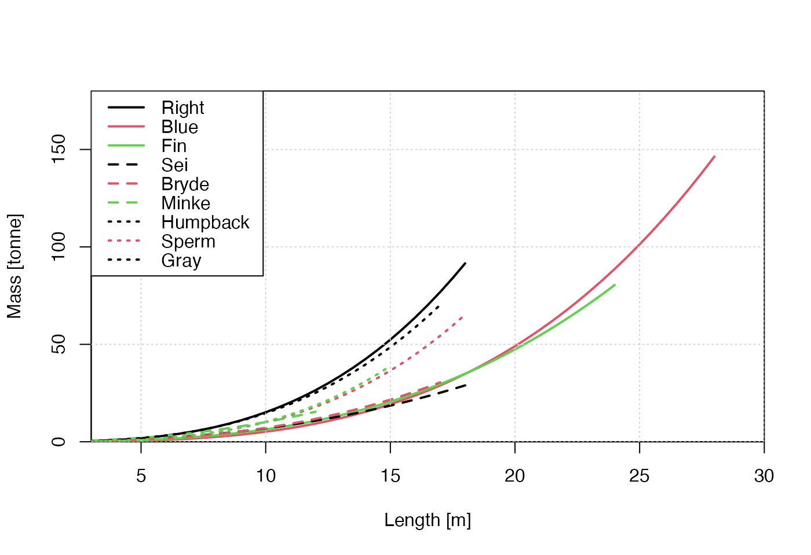
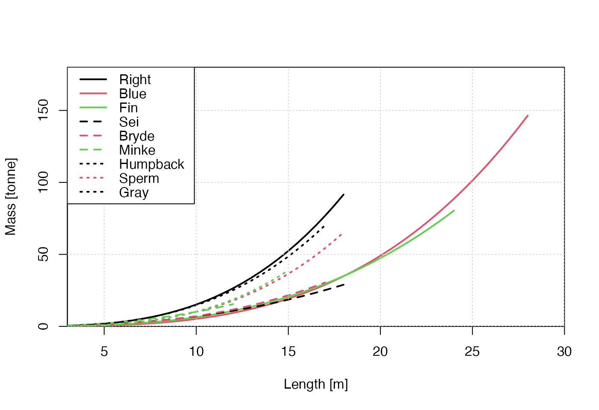

Calculate an estimate of the mass of different species of whale, based on animal length, based on formulae as listed in “Details”.
whaleMassFromLength(L, species = "N. Atl. Right Whale", model = NULL)Arguments
- L
whale length in m.
- species
character value specifying the species (see “Details”). If only one value is given, then it will repeated to have the same length as
L. Otherwise, its length must match the length ofL.- model
either NULL (the default), to choose a model based on the particular species, or a character value specifying the model (see “Details”). If only one value is given, then it will repeated to have the same length as
L. Otherwise, its length must match the length ofL.
Value
Mass in kg.
Details
The permitted values for model and species are as follows. Note
that if model is not provided, then Fortune (2012) is used
for "N. Atl. Right Whale", and Lockyer (1976) is used for all
other species.
"moore2005"(which only works ifspeciesis"N. Atl. Right Whale") yields \(242.988 * exp(0.4 * length)\), which (apart from a unit change onL) is the regression equation shown above Figure 1d in Moore et al. (2005) for right whales. A difficult in the Moore et al. (2005) use of a single nonzero digit in the multiplier onLis illustrated in “Examples”."fortune2012"withspecies="N. Atl. Right Whale"yields the formula \(exp(-10.095 + 2.825*log(100*L))\) for North Atlantic right whales, according to a corrected version of the erroneous formula given in the caption of Figure 4 in Fortune et al (2012). (The error, an exchange of slope and intercept, was confirmed by S. Fortune in an email to D. Kelley dated June 22, 2018.)"fortune2012"withspecies="N. Pac. Right Whale"yields the formula \(exp(-12.286 + 3.158*log(100*L))\) for North Pacific right whales, according to a corrected version of the erroneous formula given in the caption of Figure 4 in Fortune et al (2012). (The error, an exchange of slope and intercept, was confirmed by S. Fortune in an email to D. Kelley dated June 22, 2018.)"lockyer1976"uses formulae from Table 1 of Lockyer (1976). The permittedspeciesand the formulae used are as follows (note that the"Gray Whale"formula is in the table's caption, not in the table itself)."Blue Whale": \(2.899 * L^3.25\)"Bryde Whale": \(12.965 * L^2.74\)"Fin Whale": \(7.996 * L^2.90\)"Gray Whale": \(5.4 * L^3.28\)"Humpback Whale": \(16.473 * L^2.95\)"Minke Whale": \(49.574 * L^2.31\)"Pac. Right Whale": \(13.200 * L^3.06\)"Sei Whale": \(25.763 * L^2.43\)"Sperm Whale": \(6.648 * L^3.18\)
References
Lockyer, C. "Body Weights of Some Species of Large Whales." J. Cons. Int. Explor. Mer. 36, no. 3 (1976): 259-73.
Moore, M.J., A.R. Knowlton, S.D. Kraus, W.A. McLellan, and R.K. Bonde. "Morphometry, Gross Morphology and Available Histopathology in North Atlantic Right Whale (Eubalaena Glacialis) Mortalities (1970 to 2002)." Journal of Cetacean Research and Management 6, no. 3 (2005): 199-214.
Fortune, Sarah M. E., Andrew W. Trites, Wayne L. Perryman, Michael J. Moore, Heather M. Pettis, and Morgan S. Lynn. "Growth and Rapid Early Development of North Atlantic Right Whales (Eubalaena Glacialis)." Journal of Mammalogy 93, no. 5 (2012): 1342-54. doi:10.1644/11-MAMM-A-297.1 .
See also
whaleLengthFromMass() is the reverse of this.
Examples
library(whalestrike)
L <- seq(5, 15, length.out = 100)
kpt <- 1000 # kg per tonne
# Demonstrate (with dashing) the sensitivity involved in the single-digit
# parameter in Moore's formula, and (with colour) the difference to the
# Fortune et al. (2012) formulae.
plot(L, whaleMassFromLength(L, model = "moore2005") / kpt,
type = "l", lwd = 2,
xlab = "Right-whale Length [m]", ylab = "Mass [tonne]"
)
lines(L, 242.988 * exp(0.35 * L) / kpt, lty = "dotted", lwd = 2)
lines(L, 242.988 * exp(0.45 * L) / kpt, lty = "dashed", lwd = 2)
lines(L, whaleMassFromLength(L,
species = "N. Atl. Right Whale",
model = "fortune2012"
) / kpt, col = 2, lwd = 2)
lines(L, whaleMassFromLength(L,
species = "N. Pac. Right Whale",
model = "fortune2012"
) / kpt, col = 3, lwd = 2)
legend("topleft",
lwd = 2, col = 1:3,
legend = c("moore2005", "fortune2012 Atlantic", "fortune2012 Pacific")
)
 # Emulate Figure 1 of Lockyer (1976), with roughly-chosen plot limits.
L <- seq(0, 18, 0.5)
m <- whaleMassFromLength(L, species = "Pac. Right Whale", model = "lockyer1976") / kpt
plot(L, m,
col = 1, xlab = "Length [m]", ylab = "Mass [tonne]", type = "l", lwd = 2,
xaxs = "i", yaxs = "i", xlim = c(3, 30), ylim = c(0, 180)
)
L <- seq(0, 28, 0.5)
m <- whaleMassFromLength(L, species = "Blue Whale", model = "lockyer1976") / kpt
lines(L, m, col = 2, lwd = 2)
L <- seq(0, 24, 0.5)
m <- whaleMassFromLength(L, species = "Fin Whale", model = "lockyer1976") / kpt
lines(L, m, col = 3, lwd = 2)
L <- seq(0, 18, 0.5)
m <- whaleMassFromLength(L, species = "Sei Whale", model = "lockyer1976") / kpt
lines(L, m, col = 1, lty = 2, lwd = 2)
L <- seq(0, 17, 0.5)
m <- whaleMassFromLength(L, species = "Bryde Whale", model = "lockyer1976") / kpt
lines(L, m, col = 2, lty = 2, lwd = 2)
L <- seq(0, 12, 0.5)
m <- whaleMassFromLength(L, species = "Minke Whale", model = "lockyer1976") / kpt
lines(L, m, col = 3, lty = 2, lwd = 2)
L <- seq(0, 17, 0.5)
m <- whaleMassFromLength(L, species = "Humpback Whale", model = "lockyer1976") / kpt
lines(L, m, col = 1, lty = 3, lwd = 2)
L <- seq(0, 18, 0.5)
m <- whaleMassFromLength(L, species = "Sperm Whale", model = "lockyer1976") / kpt
lines(L, m, col = 2, lty = 3, lwd = 2)
L <- seq(0, 15, 0.5)
m <- whaleMassFromLength(L, species = "Gray Whale", model = "lockyer1976") / kpt
lines(L, m, col = 3, lty = 3, lwd = 2)
grid()
legend("topleft",
col = c(1:3, 1:3, 1:2), lwd = 2, lty = c(rep(1, 3), rep(2, 3), rep(3, 3)),
legend = c("Right", "Blue", "Fin", "Sei", "Bryde", "Minke", "Humpback", "Sperm", "Gray")
)

# Emulate Figure 1 of Lockyer (1976), with roughly-chosen plot limits.
L <- seq(0, 18, 0.5)
m <- whaleMassFromLength(L, species = "Pac. Right Whale", model = "lockyer1976") / kpt
plot(L, m,
col = 1, xlab = "Length [m]", ylab = "Mass [tonne]", type = "l", lwd = 2,
xaxs = "i", yaxs = "i", xlim = c(3, 30), ylim = c(0, 180)
)
L <- seq(0, 28, 0.5)
m <- whaleMassFromLength(L, species = "Blue Whale", model = "lockyer1976") / kpt
lines(L, m, col = 2, lwd = 2)
L <- seq(0, 24, 0.5)
m <- whaleMassFromLength(L, species = "Fin Whale", model = "lockyer1976") / kpt
lines(L, m, col = 3, lwd = 2)
L <- seq(0, 18, 0.5)
m <- whaleMassFromLength(L, species = "Sei Whale", model = "lockyer1976") / kpt
lines(L, m, col = 1, lty = 2, lwd = 2)
L <- seq(0, 17, 0.5)
m <- whaleMassFromLength(L, species = "Bryde Whale", model = "lockyer1976") / kpt
lines(L, m, col = 2, lty = 2, lwd = 2)
L <- seq(0, 12, 0.5)
m <- whaleMassFromLength(L, species = "Minke Whale", model = "lockyer1976") / kpt
lines(L, m, col = 3, lty = 2, lwd = 2)
L <- seq(0, 17, 0.5)
m <- whaleMassFromLength(L, species = "Humpback Whale", model = "lockyer1976") / kpt
lines(L, m, col = 1, lty = 3, lwd = 2)
L <- seq(0, 18, 0.5)
m <- whaleMassFromLength(L, species = "Sperm Whale", model = "lockyer1976") / kpt
lines(L, m, col = 2, lty = 3, lwd = 2)
L <- seq(0, 15, 0.5)
m <- whaleMassFromLength(L, species = "Gray Whale", model = "lockyer1976") / kpt
lines(L, m, col = 3, lty = 3, lwd = 2)
grid()
legend("topleft",
col = c(1:3, 1:3, 1:2), lwd = 2, lty = c(rep(1, 3), rep(2, 3), rep(3, 3)),
legend = c("Right", "Blue", "Fin", "Sei", "Bryde", "Minke", "Humpback", "Sperm", "Gray")
)
